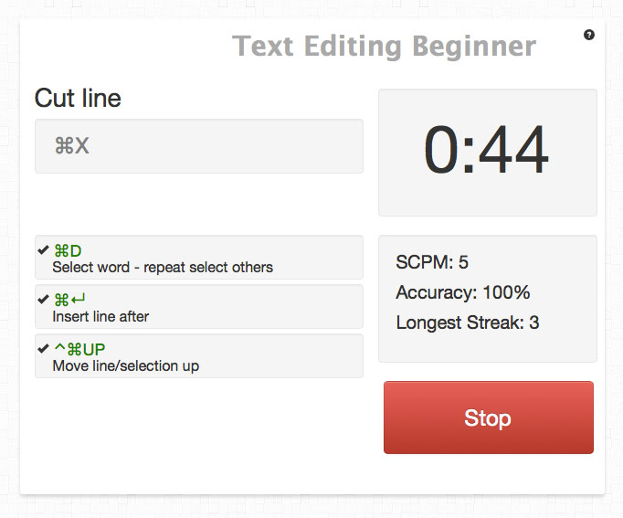
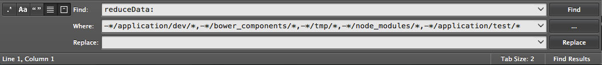
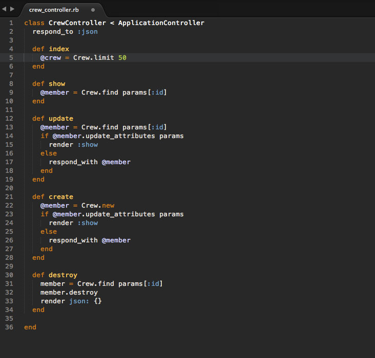
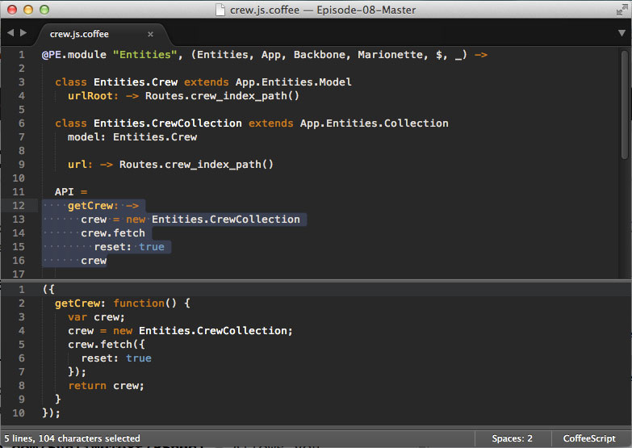
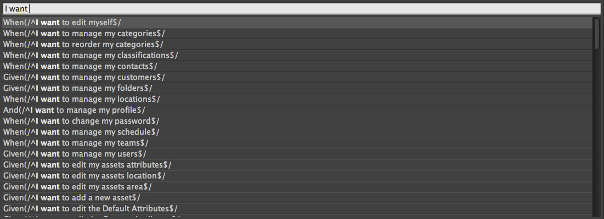

I arguably spend more than 90% of my workday working in my text editor. Knowing how to become faster and more proficient in Sublime Text has saved me a great deal of time and headache every day. In this guide I’ve outlined the resources needed to make the most out of using Sublime Text. As of this writing, I am using Sublime Text 3.
Get to know Sublime Text
Nettuts has a free screencast focusing on the perfect workflow for Sublime Text. The first 1/3 of the video should be a requirement for anyone using Sublime, but honestly it’s all incredibly useful. Perfect Workflow in Sublime Text
Keyboard Shortcuts
If you want to master some shortcuts, try ShortcutFoo. Their interactive app let’s you practice, drill, then be tested on most keyboard shortcuts. They also cover other disciplines like Vim, Git, and Photoshop.

For a short list of some default shortcuts, go here: Sublime Text OSX Keyboard Shortcuts
For reference:
Here are some of my favorite:
+ + g - This will highlight every instance of a highlighted word. Great as a “find and replace” for the file you are currently on. + g - Find next. + + v - Paste and indent. + + ↑ - Swap line up. + + ↓ - Swap line down. + + d - Duplicate line. + / - Comment out current selection. + + # - Sets layout to number of panes specified. ( + + 2 will be 2 panes).
CheatSheet
If you want to see every shortcut available in Sublime Text, download CheatSheet (for Mac). After downloading, just hold the ⌘ key for a few seconds to get a list of all active shortcuts of the current application.
Custom Key Bindings
Add any specific key bindings into the User Keybindings file. To edit this file go to the main menu, select Preferences then Keybindings - User. Below is another one of my favorite key bindings.
1 | [ |
Custom User Settings
Add custom settings into the User Settings file. To edit this file go to the main menu, select Preferences then Settings - User.
1 | { |
Working with Projects
The quickest way to get started coding with all the necessary files needed, is to use Projects. Projects in Sublime Text are made up of two files: the sublime-project file, which contains the project definition, and the sublime-workspace file, which contains user specific data, such as the open files and the modifications to each.
To save a project, open Sublime Text and drag the desired folder into the sidebar (or on Mac drag it directly into the Dock’s icon). Go to Project and choose Save Project As.
Now, while the project is open, to access the sublime-project file, go to Project then choose Edit Project.
Sublime-project files are JSON, and support three top level sections: folders, for the included folders, settings, for file-setting overrides, and build_systems, for project specific build systems. An example:
1 | { |
Any folders or files excluded within your project will no longer be searched when using Show Overlay (super + t). It’s a good idea to exclude the tmp folder and log folders so that you don’t open and make changes to files in these folders accidentally.
To switch between projects while in Sublime Text:
1 | <super> + <ctrl> + p |
Exclude / Include Folders from Find
I’ve often needed to do a Find All, while excluding specific folders from my search. In the Where: field of the Find, you can use regular expression to exclude folders. Example:
1 | -*/application/dev/*,-*/bower_components/*,-*/tmp/*,-*/node_modules/*,-*/application/test/* |

Exclude folder paths from Find in Sublime Text
By the same method you can specify which folders to include. Example:
1 | */application/* |
Packages
There are many useful packages for Sublime Text that you can use, but first you’ll need to download Sublime Package Control.
To open the Package Control command palette, after installation click <Cmd> + <Shift> + P or access via the Preferences menu.
Helpful Packages
This is a list of packages I’ve found helpful through my projects.
Syntax Highlighting
- Coffeescript - Properly highlights code in Coffeescript.
- Eco - Properly highlight code in Embedded Coffeescript.
- Cucumber - Properly highlight code in cucumber.
- RSpec - Properly highlight code in RSpec.
- Sass - Properly highlight code in Sass or SCSS files.
Color Theme
- Railscast Color Scheme - Just a color scheme. It’s easy on the eyes!

Railscast Color Scheme. Code from http://www.planetexpressapp.com
Sublime Text Extensions
- Sidebar Enhancements - This adds extra options when you right-click on a file in the sidebar including Open with.., Delete, Rename, and Move.
- TrailingSpaces - Automatically trims whitespace on save
CoffeeScript
CoffeeCompile - This has become one of my favorite packages since recently learning CoffeeScript. It compiles CoffeeScript directly in Sublime Text. To use the plugin, highlight your CoffeeScript and hit

Compile CoffeeScript directly in Sublime Text with CoffeeCompile.
Testing
Cucumber Step Finder - Navigate easily to your cucumber steps. Type
<super>+yand begin typing the step text to see results. Must setup the proper path to features in the settings. (See link for instructions).
Cucumber Step Finder finds all matching Cucumber steps.
Rspec - Allows you to switch between models and controllers by
+ ,. Has snippets for writing tests as well. - Ruby Tests - Allows running of single or whole file RSpec based tests (including Cucumber) via shortcuts.
- SublimePrettyJson - Formats JSON. We use JSON to mock data for use in Sinon.js. To format, through Command Palette
ctrl+shift+pselect “Pretty JSON: Format (Pretty Print) JSON”.
Git & GitHub
- Githubinator - Allows you to right click within any file and go directly to its GitHub url. This is useful to quickly search the history of a file or do the dreaded GitHub blame on a specific line of code.
- Git Gutter - Shows icons in the gutter of your file indicating whether a line has been inserted, modified or deleted.
Documentation
- Goto Documentation - Opens appropriate documentation in the browser on highlight of Ruby on Rails, JavaScript, CoffeeScript and more.
- Dash Doc - Open the selected code within the Dash documentation. You will need to download Dash, but it’s so worth it. I use it everyday. It’s worth a purchase although there is a free version.
Markdown
- Table Editor - This package is essential for formatting Markdown tables. I know, how often do you need this? Apparently a lot when you’re writing API docs in Markdown. Just setup your table headers in a Markdown file and hit tab to go through each row and column as you fill it in. It will automatically format.
1 | | Action | Method | Url | Auth | |
Integration with Other Applications
- Afred Workflow - Open files or a folders in Sublime Text from Alfred by using a Keyword
sublor by file/folder action. You will have to purchase Alfred to use workflows (another worthy purchase in my opinion). - OS X Command Line - Instructions on how to open files in Sublime Text directly from command line.
- Git - Instructions on how to set Sublime Text as your default text editor for Git.